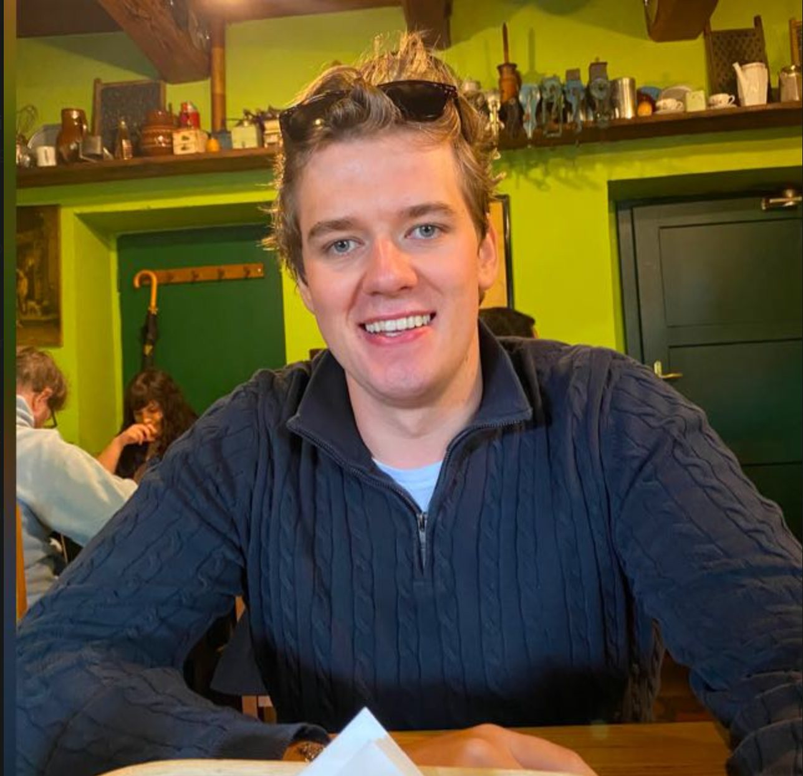
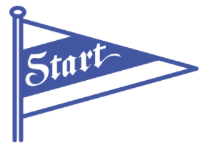
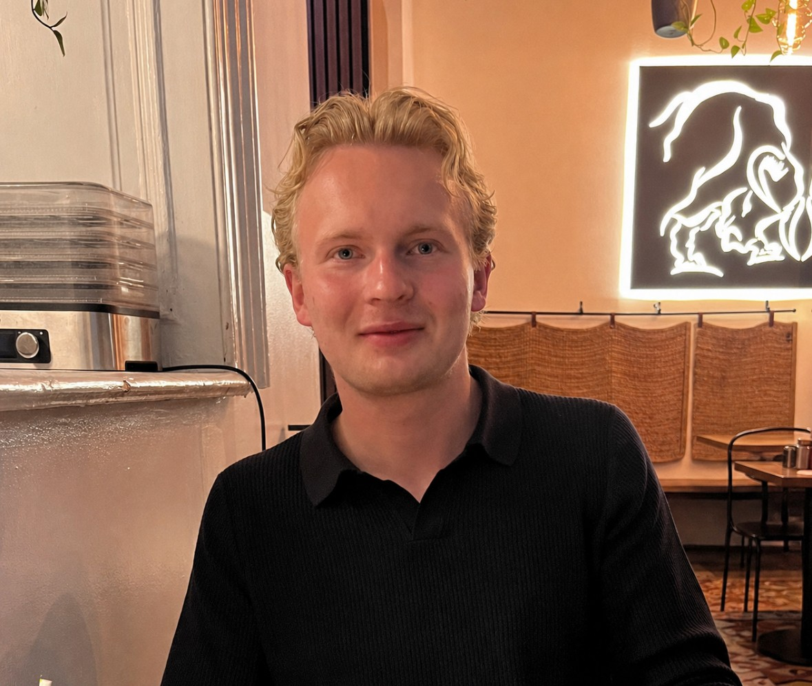

Personlig refleksjon
Øyvind
Personlig refleksjon kommer her – hva du har lært, hva du syntes var mest interessant, og hva du tar med deg videre.
Eventuelt et avsnitt til om utfordringer, nye verktøy eller ferdigheter.

IK StartHos IK Start har vi jobbet med å utvikle en ernæringsapp for klubbens akademi, med mål om å gjøre det enkelt for spillerne å registrere og følge opp kosthold og restitusjon. Klubben hadde ingen eksisterende løsning for dette, så vi startet helt fra bunnen av. Gjennom dialog med klubben fikk vi en forståelse av behovene til både spillere og trenere, og hvor viktig det er at løsningen er rask og enkel å bruke i en travel hverdag med trening og skole. Vi har jobbet med én del av appen om gangen, fra idé og struktur til design og utvikling, og justert underveis basert på tilbakemeldingene vi har fått. Det har vært en verdifull erfaring der vi både har fått bruke det vi har lært gjennom studiet og tilegnet oss ny kunnskap om å utvikle en løsning for en ekte oppdragsgiver.

Personlig refleksjon kommer her – hva du har lært, hva du syntes var mest interessant, og hva du tar med deg videre.
Eventuelt et avsnitt til om utfordringer, nye verktøy eller ferdigheter.
Det har vært veldig lærerikt å jobbe for IK Start og få utvikle en løsning for en ekte oppdragsgiver. Å vite at appen skal brukes av spillere og trenere i akademiet gjorde at vi hele tiden måtte tenke på hva som faktisk er nyttig for dem.
Å lage en ernæringsapp fra bunnen av har vært både spennende og krevende. Jeg har lært mye om å planlegge et større prosjekt, dele det opp i mindre deler og justere underveis etter tilbakemeldinger fra klubben.
Alt i alt sitter jeg igjen med god erfaring fra samarbeid i gruppe og dialog med en oppdragsgiver, og jeg har fått mer tro på at jeg kan bidra i reelle utviklingsprosjekter.

Personlig refleksjon kommer her – hva du har lært, hva du syntes var mest interessant, og hva du tar med deg videre.
Eventuelt et avsnitt til om utfordringer, nye verktøy eller ferdigheter.